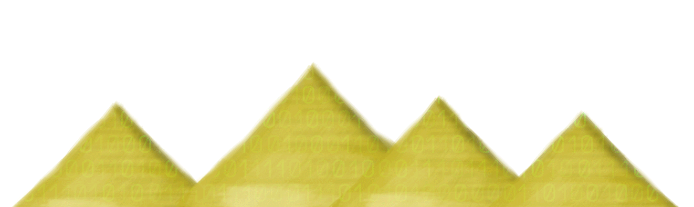
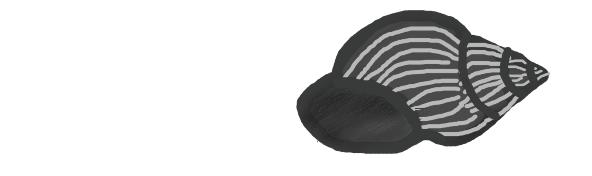

Code in My System|
Selena Tuyen
The Big 4

Your footsteps echo into the Amazon
sending packets over nets through the river
rapids, high as the clouds next to Bezos.
Break through the Windows with a box
marked 'X,' to see sharp bots create water
systems that pour through the Gates.
Climb the four pyramids of gold engraved
with the python's script. Try to crack
their code. Just please don't crash.
You're feeling lucky wearing blue, red,
yellow, and green goggles in search
of all the bugs to create a new Page.
Maybe rip one from the sacred book
sourced with thousands of lines, shared
amongst many friends like that Zuck.
The Code
import all you need;
public class Mind{
protected static main(){
//solve all your problems here
//or call for help from another, even yourself
//store what you want to remember
for each prob in problems{
answer = solveProblem(prob);
problems--;
}
return if you wish;
}
}
Deadlock
Mutually exclusive inside this system
Fight me for the unreachable need
As prevention persists between us
Hold and wait with the one you have
Still, as another acts the same
Unknowingly in need of each other
No preemption within this system
Both are unwilling to relinquish
Their own, without voluntary release.
Circular wait, waiting for a chance
But you hold what I need to
complete the process
Mergesort
Hollow out a shell so I can be cloned
Left and right, divide me into halves
Until there are only two parts left
Element by element, access and compare
All of them, picking out only the best
Copy the pieces and fill in the empty
Remains. Target set to the final form
Put the segments of me back together
Now that I am in perfect order.
Shells

My shells are colored black
Speckled with lines of white
I can talk to my shells. They
even respond with echoes.
My shells do everything I ask
Unless they are crushed
Bash sh ssh, my shells.
Zombie
A child found inside the system
Her seat was placed at the table
But she ran until she was complete
Reaching the terminated state
Though her presence still lingers
Since the reaper has yet to collect
Her seat, remains alone at the table
Please notify her waiting parent.
Glossary
The Big 4
- Echo - Amazon echo
- Packets - internet protocol involves sending packets of data from a client to server
- Clouds - Amazon is a key player in cloud computing with Amazon Web Services(AWS) which provides an on-demand cloud platform for customers to use.
- Bezos - Jeff Bezos is the founder of Amazon.
- Windows - An operating system created by Microsoft
- Box marked 'X' - Microsoft' Xbox 360, Xbox One
- See Sharp - A play on C#, which is a programming language created by Microsoft.
- Gates - Bill Gates is the founder of Microsoft.
- Feeling Lucky - Google's I'm feeling lucky option
- Blue, red, yellow, and green - the colors of google.
- Page - Larry Page, the cofounder of Google;webpage.
- Rip - to copy data from
- Sourced - Often times the primary files in a program are called the source code
- Zuck - Mark Zuckerberg is the founder of Facebook.
- Python's Script - python is a programming language often used for scripting
- Crack their Code - Cracking the Coding Interview is a book that is a staple in all software engineer's libraries.
The Code
- // - are used to preceed a comment in code, which is a line that will not be compiled by the compiler.
- import all you need; - Typically in code many libraries and external resources need to be imported
- //solve all your problems here - Code is used to solve problems
- //or call for help from another, even yourself - refers to modularization,breaking up code into different functions and calling them to allow reusabilty. A function calling itself is a concept called recursion.
- //store what you want to remember; - variables store data in code to be reused or returned
- for each prob in problems{ - for every problem in a list of problems
- answer = solveProblem(prob); - A function solveProblem solves the problem and saves it to a variable answer
- problems--; - Decreases total number of problems in list by 1
- return if you wish; - most functions return a value
Deadlock
- Deadlock - A concept found in concurrent programming which involves multiple processes running simultaneously. A deadlock is when 2 or more processes can no longer continue because they need another resource in order to complete their task. Typically the processes are holding each other's resource but both are waiting for the other to release it. For a deadlock to occur these 4 conditions need to be met: Mutual exclusion, hold and wait, no preemption, and circular wait.
- Mutual Exclusion - the resources needed can only be used by one process at a time and are unshareable
- Hold and Wait - a process is currently holding at least one resource and requesting additional resouces which are being held by other processes
- No Preemption - a resource can be released only voluntarily by the process holding it
- Circular Wait - each process must be waiting for a resource which is being held by another process, which in turn is waiting for the first process to release the resource
Mergesort
- Mergesort-a sorting algorthim that involves splitting an array until there are only two elements in each subarray. Once that occurs, sort each subarray and merge with another subarray until it becomes one entire array that is in order. This is often implemented using an empty array of the same size to help copy and move elements easier.
Shells
- Shell - is a terminal where commands can be entered
- Echoes - echo is a command used in Bash shells to print a line to the shell
- Crushed - is a play on crashed, when a shell script fails it can "crash"
- Bash- Bourne Again Shell, a type of shell
- sh - Bourne Shell, one of the original shells
- ssh - Secure Shell, typically used to access a shell terminal remotely
Zombie
- Zombie - A zombie process is a child process has fully completed running but still exists in the process table
- Child - a child process is ran by a parent process
- System - operating system that is running the process
- Table - a process table holds all current processes running
- Ran - running code
- Terminated State - once a process reaches a state of completion it's state is changed to terminated
- Reaper - when a child process id is removed from the process table it is said to be reaped
- Waiting Parent - the parent process is waiting for a response that their child process has terminated so they can remove the process from the table